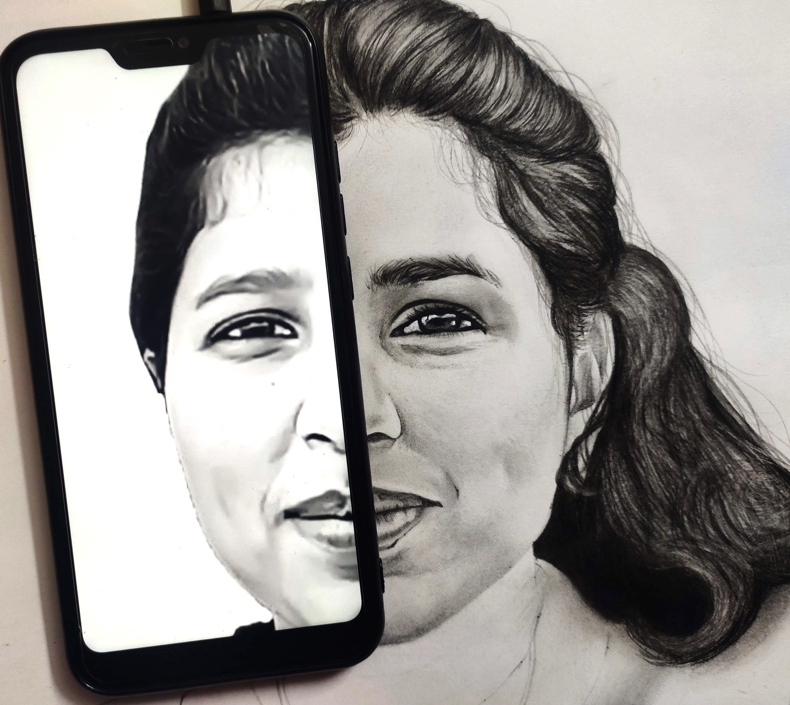
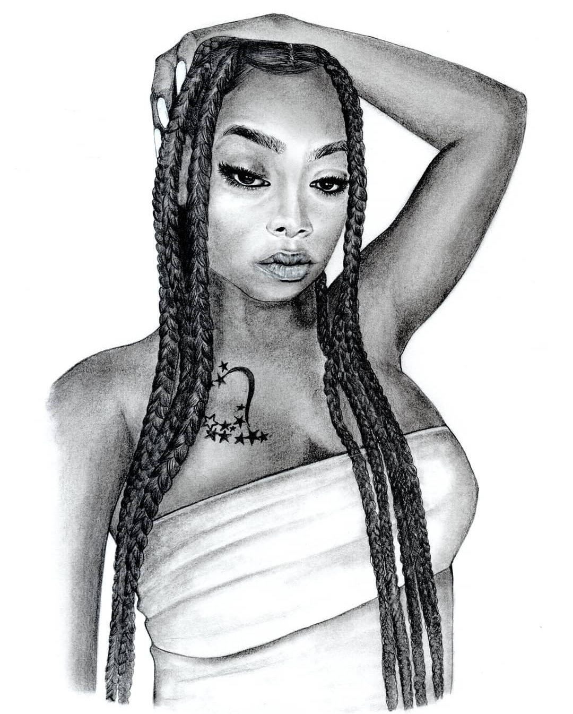
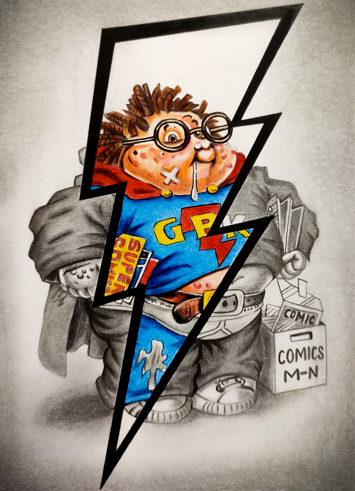
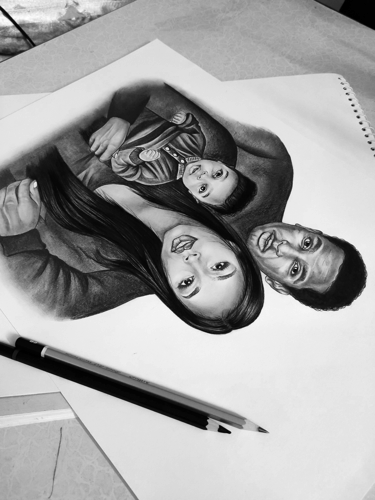
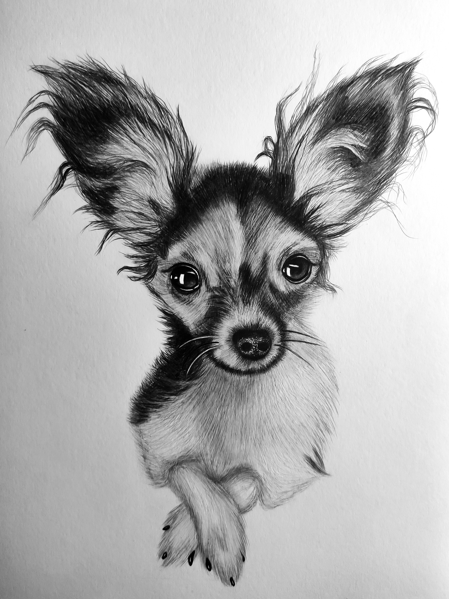

-

This was my first commission work !
On 16th of jan 2021 was the day when after using instagram for 3 months to publish my artworks, I received my first ever commission work from Punjab. The image on the left is the artwork I am talking about. Initially I never thought of sharing my artworks to get paid work, but in a few days everything started multiplying. I started getting orders from various places in India.
-

My first international work
So 3 months after getting my first ever commission work, I got the opportunity to work for an international client from London. Initially I was just supposed to make my client’s artwork and send her the softcopy of the artwork and short recorded video (time-lapse) of the whole process. But she loved the artwork so much that she accepted to pay for very expensive shipping too just to get that artwork. Delivery charges were more than the cost of the artwork.
This artwork taught me alot. I learned many new skills like video editing, how international payments cannot be received directly into your Indian bank account and how to send a parcel to another country very cheap by exploring many shipping options of different shipping agencies. This artwork prepared me for many future opportunities which were about to unfold.
-

I designed a Garbage Pail kids card
A very unique opportunity came across to me when someone from The Topps Company, Inc. an American company asked me to design them a modern version of their already existing card which was in production in 1986. They wanted the hand drawn version of the card. The image you are looking at on your left is that card.
-

Very interesting story behind this artwork !
So during 2021, when the whole world was under lockdown, Mrs Suzen from New York requested me to make a completely unique artwork where I was just presented with the 3 faces. So the story is that when the lockdown was announced and the flights were completely banned in America from any other country, Mrs Suzen’s husband was stuck in Cape town in Africa. She did not have any photo of them 3 in a single photo. So for her daughter’s first birthday she wanted me to make a sketch where they 3 should be in a single pose. It was challenging to make a photo without any body reference but it was really a fun and learning experience to me.
-

First time drawn a realistic sketch of a dog
I got an opportunity where I was supposed to draw a dog’s realist portrait from a low resolution reference image. I learned a new technique where I learned to use a clay carving tool, which is used to make idols to make realistic looking fur of the dog. It was a great experience for me and I loved the whole process of making this sketch.